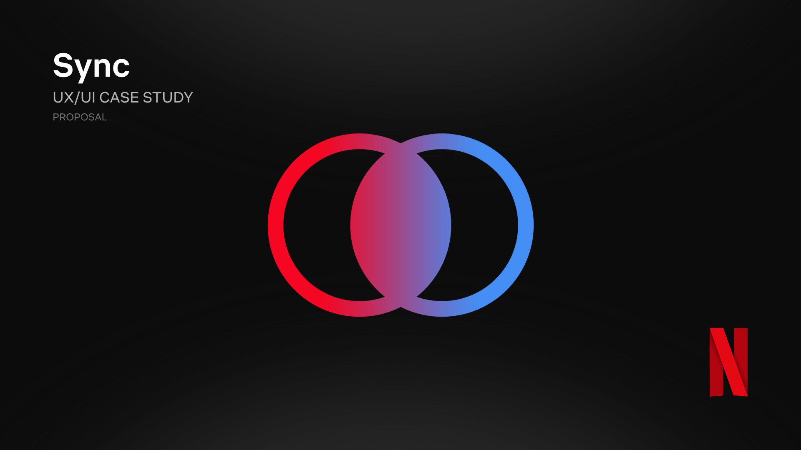
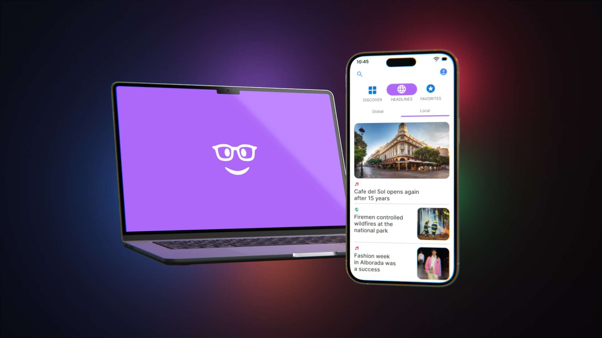

Design exercise
Netflix Sync: Watch together, anywhere
Project vision
Netflix Sync is a shared viewing feature that allows users to synchronize playback with others and track collective progress across a title. The goal is to recreate the feeling of watching together—even when users are in different locations—while reducing friction around coordinating episodes, timing, and progress.
Vision statement
Turn solo streaming into a shared experience without sacrificing simplicity.
Problem statement
Today, Netflix is optimized for individual viewing, but many users consume content socially. Watching together remotely requires external tools, constant coordination, and manual tracking of progress—creating friction in what should be a seamless experience.
Key challenges
Synchronizing playback across multiple devices and networks
Tracking shared progress without overwriting individual viewing history
Keeping the experience simple and non-intrusive
Supporting both scheduled and spontaneous watch sessions
User pain points
“What episode are you on?” conversations happen repeatedly
Countdown syncing (“3…2…1…play”) is unreliable
Watching ahead breaks shared progress
Users rely on third-party apps or browser extensions
No clear indication of shared vs personal viewing progress